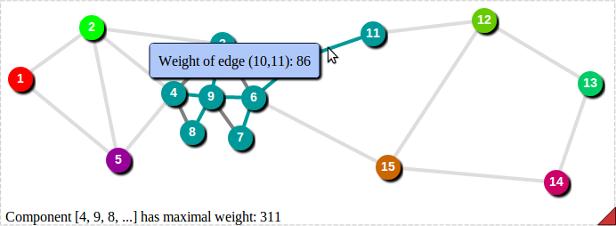

Usage Instructions
CATBox is an application that animates graph algorithms operating on different graphs. It features a codebox that shows the current step of the algorithm execution, and allows breakpoints on any line. A scalable graph shows the current state of the algorithm with color coded edges and vertices. Edges, Vertices, and the Graph all have information associated with them. The animation can run at multiple speeds, and any point in the animation can be jumped to.
Controls
CodeBox
- The breakpoint indicators next to each of the lines of code are blue if the breakpoint is not active, and red if it is.
- Click any part of a code line to toggle a breakpoint.
- The current line is shown with the highlighted yellow box.
Playback Bar

-
The main animation controls are at the left of the bar. The buttons are brighter when they are clickable, and more transluscent when they are not clickable(the play button is not clickable in this image).
- The play button is at the far left. When clicked it will begin animation.
- The second button from the left is the step button. If pressed when the animation is running it will execute one line of code and pause the animation. When the animation is paused you can execute another line of code with by pressing the step button, stop the animation with the stop button, or restart the animation at the current position with the continue button.
- The third button from the left is the continue button. When the algorithm is paused this button will cause the animation to restart at the current position.
- The stop button stops animation and brings the animation position back to the beginning.
- The progress bar lets you jump to any position in the animation by clicking on the bar or dragging the progress bar handle to the desired position.
- The "1x" button with the text opens the speed menu where you can adjust the animation's speed to go faster or slower.
Top Control Bar

- At the left of the Control Bar there is a clickable link that returns you to the animation index page, where you can choose a different animation.
- In the middle the chapter, algorithm, and graph titles are displayed.
- The "Help" link directs you to this help page.
- Clicking the cog at the right will open a window displaying information on the animation, such as what graph colors mean.
Graph
- The vertices and edges have information that is displayed by clicking on them.
- The different colors have different meanings depending on the algorithm being run. Look at the algorithm information window to see a glossary of colors.
- Information on the current state of the algorithm is displayed at the bottom left of the graph window.